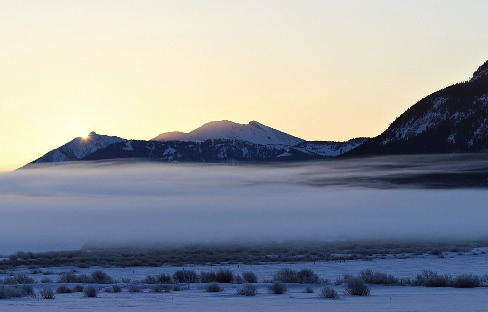
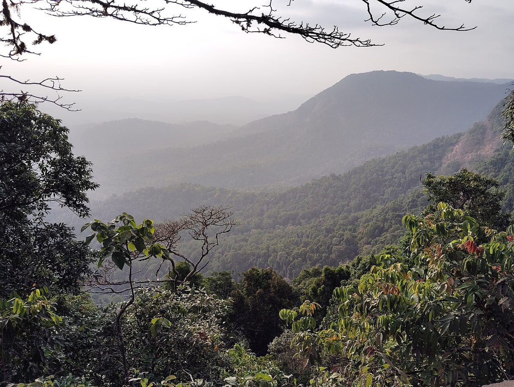

制作側の連想
遠くほど淡く、近いほど濃く
このサイトのテーマ「遠くほど淡く」は、屋号の「山」の字から制作側が連想したものです。山並みは、遠いものほど霞んで淡く、手前ほど濃く見えます。そこでページを上から下へ読み進めるほど、背景が淡い色から濃い色へ変わるように作っています。制作側の連想で、お店の理念・由来とは無関係です。
遠(淡い)────近(濃い)
霞みの見本
三つの「遠さ」
写真は美山町の風景ではありません。霞み具合のちがいを並べるために選んだ、国外のフリー素材です。
- 遠

国外のイメージ(米国) - 中遠

国外のイメージ(インド) - 中近

国外のイメージ(米国)
ご案内
お店のこと(確認できたものだけ)
| 所在地 | 〒601-0722 京都府南丹市美山町安掛寺ノ下8−３ |
|---|---|
| 電話 | 090-6755-3552 |
| 営業時間 | 準備中 |
| 定休日 | 準備中 |
| ご予約 | 準備中 |
| 駐車場 | 準備中 |
| SNS | Instagram @miyama_coffee |